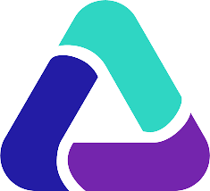

Automatisation
Ma principale mission à la Mairie de Paris est l'Automatisation de tests en recette de l'application web ISIS (par SOLIS) via UFT (Unified Fonctional Testing)
But du projet : Ce projet a pour but de faciliter le travail de la DASES (Direction annexe de la Mairie de Paris), qui avant mon arrivée, testaient l'application manuellement. Voici un extrait de code d'automatisation UFT:
Ce projet est plutôt complexe et a réussi à me faire tenir 2ans dessus !
""